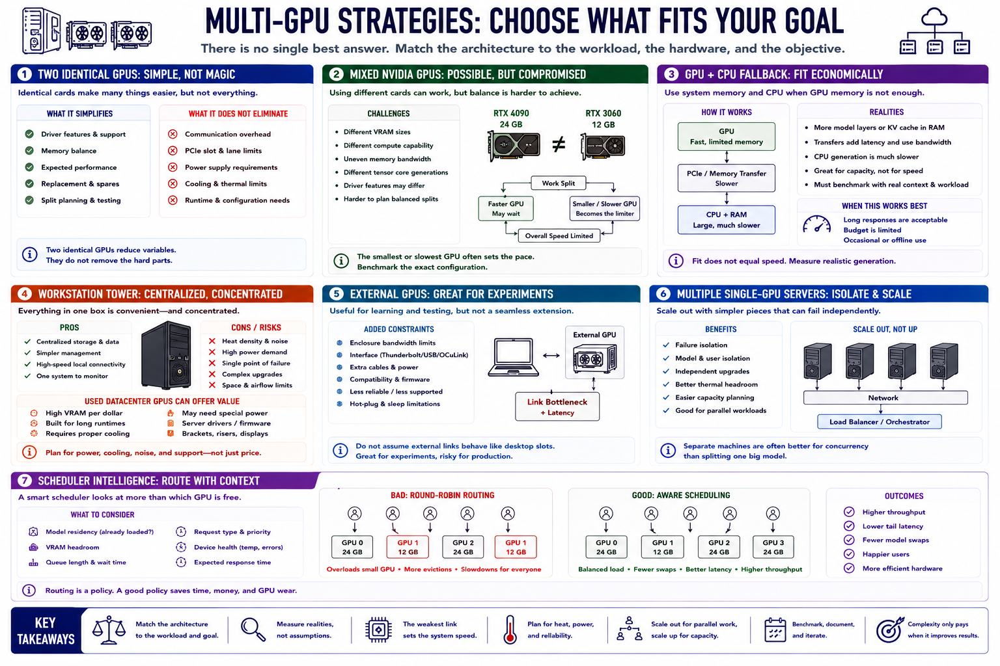

Build Patterns
Connecting to LMS... Progress: in progress

Narration
Two identical GPUs simplify driver features, memory balance, expected speed, replacement, and split planning. They do not eliminate communication overhead, slot, lane, power, cooling, or runtime requirements.
Mixed NVIDIA GPUs may be practical when reusing hardware, but different memory sizes and compute capabilities complicate balanced splits. The faster card may wait for the slower one, while the smaller card limits some strategies.
A GPU plus CPU fallback can fit a model economically when interactive speed is not critical. It should be benchmarked with realistic context because CPU-resident work and memory transfer may dominate generation.
A workstation tower centralizes storage and management but concentrates heat, noise, power, and failure. Used datacenter GPUs can offer memory value yet may require specialized cooling, power, drivers, brackets, or display arrangements.
External GPU experiments are useful for learning but add enclosure and interface constraints. A production design should not assume an experimental link offers desktop-slot behavior or support.
Multiple single-GPU servers can isolate models, users, failures, and upgrades. Networking and orchestration remain, but each node is simpler. Separate machines are often better when the goal is parallel workloads rather than one split model.
A scheduler should understand model residency, memory headroom, queue length, request type, and device health. Round-robin routing alone can overload a smaller GPU or repeatedly trigger expensive model swaps.